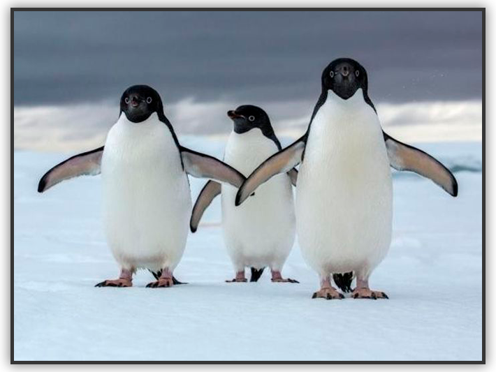
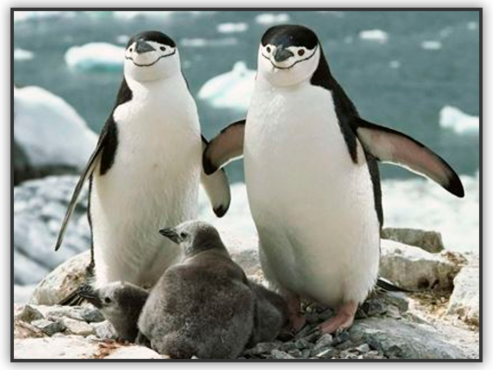

Los pingüinos son una familia de aves, la única del orden Sphenisciformes. Son aves marinas, no voladoras, que se distribuyen casi exclusivamente en el hemisferio sur, exceptuando el pingüino de las islas Galápagos.
 Los primeros europeos en observar a estas aves fueron miembros de la primera expedición de Vasco da Gama, que les llamaron pájaros niño o pájaros bobos por su andar torpe y erguido y por ser un ave incapaz de volar. Años más tarde, cuando los primeros británicos vieron a estos animales, les llamaron penguins, que era el nombre que daban a algunas especies de la familia Alcidae, como al alca gigante del Atlántico norte y al alca común (Alca torda). Sin embargo y pese a las aparentes similitudes resultado de la convergencia evolutiva, las alcas del Hemisferio Norte no están relacionadas con los Spheniscidae. Con el paso del tiempo, ha ido imponiéndose aplicar el apelativo «pingüino» solo a los miembros de la familia Spheniscidae.
Los pingüinos son las únicas aves vivientes no voladoras adaptadas al buceo propulsado por las alas. Por ello, sus alas se han convertido en aletas con huesos fuertemente comprimidos y articulaciones rígidas que impiden el movimiento independiente de los huesos del ala. Los huesos son más densos que los de otras aves, aumentando su resistencia a los impactos y aumentando también el peso del ave reduciendo su flotabilidad. Las patas están situadas muy atrás en el cuerpo, dificultando el desplazamiento en tierra, pero actuando como timones bajo el agua. Los pingüinos son capaces de alcanzar velocidades de hasta 60 km/h, aunque su velocidad normal oscila entre 5 y 10 km/h. El tiempo de inmersión aumenta con base al tamaño de la especie, siendo el emperador (Aptenodytes forsteri) el que contiene más tiempo la respiración: unos 18 minutos. Las principales reservas de oxígeno durante estos periodos se encuentran no en forma de oxígeno pulmonar, sino que se halla captado en la musculatura que contiene altas cantidades de mioglobina.